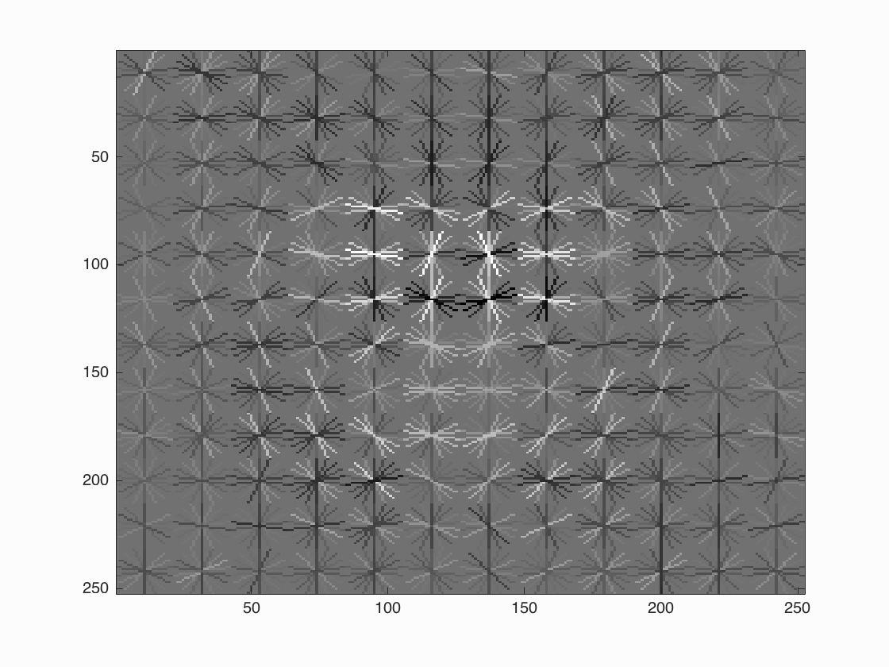
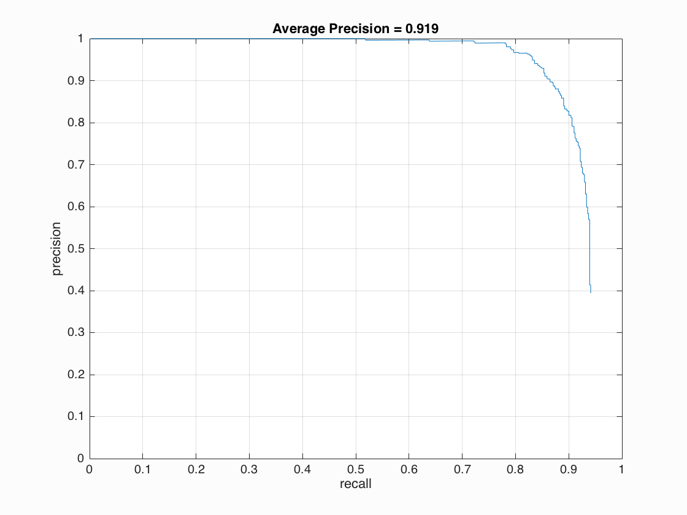
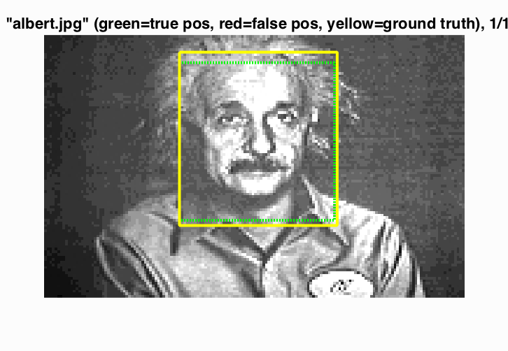
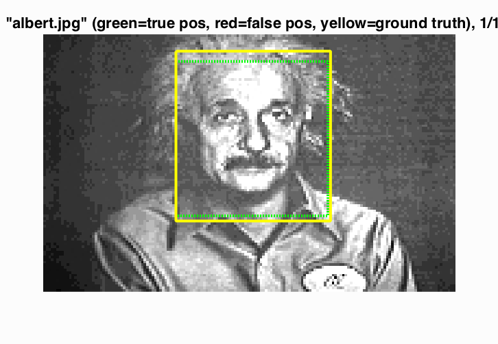

Project 5 / Face Detection with a Sliding Window
In this project we will try to recognize faces in an image. The idea is to generate hog (Histogram of Oriented Gradients) feature descriptors for both positive and negative images. In this context positive and negative means image patches containing faces and non-faces respectively. Once we have the feature descriptors for positive and negative samples we will train a classifier (linear SVM) using it. The next step will be to use the w and b obtained from our linear SVM and run a detector which will try to detect faces in an image. Specifically, in run detector we consider the image at various scales. For each scale we compute the hog feature map for the image and then go through blocks of size t × t where t = (template size) / (cell size) each time calculating the confidence = wT*x + b. If the confidence is above a certain threshold then the patch corresponding to the current patch of hog map being considered is determined as a candidate for being a face. We also need to take effect of scaling factor when defining the bounding boxes. This can be handled by multiplying the bounding box co-ordinates by (scaling_factor ^ (level - 1)) where scaling_factor is the factor used for recursively downscaling the images and level is the level in the image pyramid that we are considering. After this step we will get lot of bounding boxes near to each other. By doing non-maximum suppression we can get one bounding box for each such group.
Hard Negative Mining (Graduate/Extra credit):
The concept of hard negative mining is simple i.e. we want to determine negative samples that are hard(difficult) for the classifier and add such hard samples to our training data. Here, for the negative set we will initially consider random negative features from non face images. After this we will train our linear SVM and get the model outputs viz. w and b. Using it we will run detector on the non face images and for whatever patches that are classified as faces we will extract hog descriptors from them, add them to our negative set and rerun the linear SVM classifier to get new w and b.
Hog Implementation (Graduate/Extra credit):
I wrote my own implementation of hog. My implementation calculates hog descriptors based on the Dalal and Triggs method and not the default UoCTTI variant of vl_hog. Following steps are required for calculating the hog descriptors:- Gradient computation: I computed the gradients using 1-D centered, point discrete derivative mask in horizontal direction
- Orientation binning: Here I create a histogram of gradient orientations ignoring the sign. The histogram contains 9 bins i.e a bin width of 20° and one histogram is calculated per cell.
- Descriptor blocks and normalization: I used the R-HoG approach i.e. cells are grouped into blocks of size 2×2 and the histograms for these 4 cells are concatenated and L2 normalized to give a 36 dimensional vector. Therefore, the hog descriptor map of size m×n×9 is transformed to a m×n×36 size.
Results
| Lambda | Hog cell size | Scaling Factor | Levels | Threshold | Average Precision (%) |
|---|---|---|---|---|---|
| 0.0001 | 6 | 0.75 | 10 | 0.7 | 81.5 |
| 0.0001 | 6 | 0.75 | 10 | 0.1 | 84.3 |
| 0.0001 | 6 | 0.75 | 10 | 0.4 | 82.6 |
| 0.0001 | 6 | 0.9 | 30 | 0.7 | 86.7 |
| 0.0001 | 6 | 0.9 | 30 | 0.1 | 90.2 |
| 0.0001 | 6 | 0.9 | 30 | 0.4 | 88.6 |
| 0.0001 | 4 | 0.75 | 10 | 0.7 | 82.6 |
| 0.0001 | 4 | 0.75 | 10 | 0.1 | 86.3 |
| 0.0001 | 4 | 0.75 | 10 | 0.4 | 84.8 |
| 0.0001 | 4 | 0.9 | 30 | 0.7 | 88.8 |
| 0.0001 | 4 | 0.9 | 30 | 0.1 | 92.0 |
| 0.0001 | 4 | 0.9 | 30 | 0.4 | 90.1 |
| 0.001 | 3 | 0.75 | 10 | 0.7 | 84.0 |
| 0.001 | 3 | 0.75 | 10 | 0.1 | 88.8 |
| 0.001 | 3 | 0.75 | 10 | 0.4 | 86.9 |
| 0.001 | 3 | 0.9 | 30 | 0.7 | 90.4 |
| 0.001 | 3 | 0.9 | 30 | 0.1 | 93.1 |
| 0.001 | 3 | 0.9 | 30 | 0.4 | 92.5 |
| 0.0001 | 3 | 0.75 | 10 | 0.7 | 84.0 |
| 0.0001 | 3 | 0.75 | 10 | 0.1 | 88.3 |
| 0.0001 | 3 | 0.75 | 10 | 0.4 | 86.3 |
| 0.0001 | 3 | 0.9 | 30 | 0.7 | 90.8 |
| 0.0001 | 3 | 0.9 | 30 | 0.1 | 93.3 |
| 0.0001 | 3 | 0.9 | 30 | 0.4 | 91.9 |
| 0.00001 | 3 | 0.75 | 10 | 0.7 | 81.9 |
| 0.00001 | 3 | 0.75 | 10 | 0.1 | 86.3 |
| 0.00001 | 3 | 0.75 | 10 | 0.4 | 84.4 |
| 0.00001 | 3 | 0.9 | 30 | 0.7 | 88.7 |
| 0.00001 | 3 | 0.9 | 30 | 0.1 | 91.3 |
| 0.00001 | 3 | 0.9 | 30 | 0.4 | 90.0 |
My hog implementation runs slower but the average precision obtained is comparable.
Visualizations for the best configuration (keeping in account reasonable precision for high recall): (lambda = 0.0001, hog cell size = 3, scaling factor = 0.9, levels = 30, threshold = 0.4) for average precision of 91.9 Face template HoG visualization

Precision Recall curve.

Some examples
 
